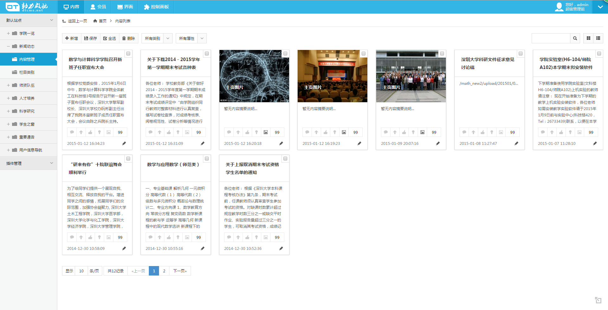
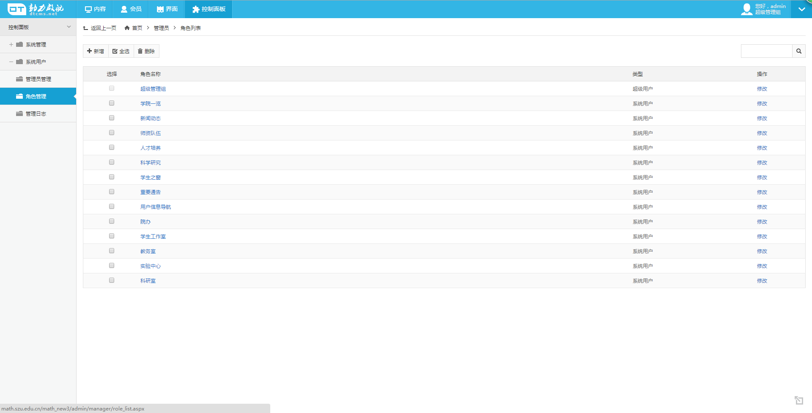
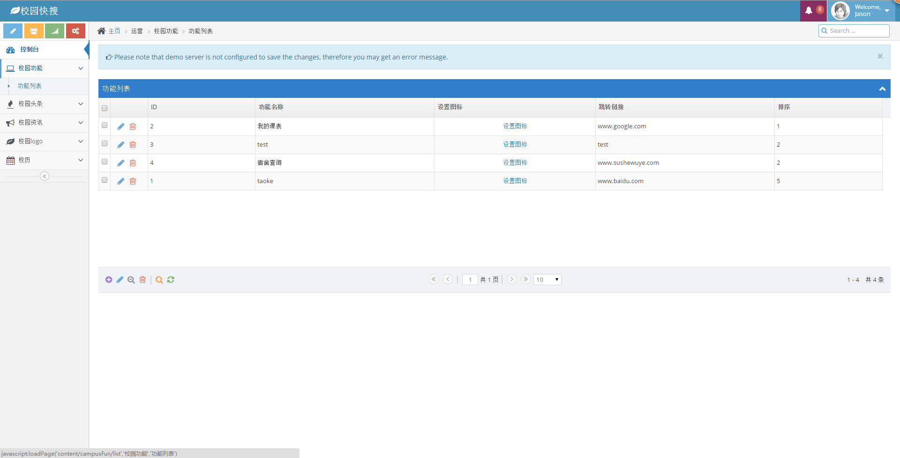

基本信息
学校：深圳大学 专业：计算机科学与技术
联系方式：(+86) 15019495924 电子邮件：dooitysz@gmail.com
平均GPA：3.87
职业技能
- 有一年多的项目开发经验，熟悉C#.NET开发语言，对.NET开发模式有较深理解。
- 专业课都学的较好，c++程序设计和数据结构等课程都拿了A+，基础比较扎实。
- 熟悉HTML+CSS+JS+JQuery等前端语言和框架，java和php都有一定开发经验，曾有websocket开发过实时聊天系统。
- 学会使用版本控制进行项目开发迭代记录和团队协作，通过对MVC框架的学习，对设计模式有一定理解。
- 熟悉Linux的一些常用命令，架设服务器等操作。
项目经历
学院网站开发
项目简介
开发一个学院的网站，作日常信息发布以及教师用户管理等。
所用技术
c#.NET
工作内容
前端模板制作和整个后台逻辑开发，包括内容发布版块、教师会员管理版块、后台管理员权限分配模块等。
 项目收获
初次系统地搭建一个网站，将数据库实体类，数据库操作类和工具类等都各自独立的包装起来，类之间也尽可能通过继承的方式设计，这样子在搭建过程中会觉得比较繁琐，但是对网站后期维护和二次开发提供了极大的便利。用.NET开发起来方便挺多，它本来也是基于MVC编程模式。在项目过程中，难点主要在要将管理员权限细化到最小子类中。
校园快搜后台建设
项目简介
校园快搜是我们自发的一个移动端的项目，主要是收集学校中的各类信息，进行整合处理，然后提供给学生解决所遇问题的一个搜索引擎。除了搜索功能外，还有相关的校园类信息展示。
所用技术
java+spring框架
工作内容
开发后台中的功能，让管理员可以发布相关信息和管理注册的用户。
项目收获
采用了spring框架，对MVC框架有了更深入的认识，主要的部分在控制层，将前端和后台联系起来，在前端实现和后台数据的交互等主要是通过ajax来实现，前端采用了bootstrap等模板来实现，上手还是有一定难度。项目主要花时间也是在于控制层的编写，和前端用ajax与后台交互，同时也学会了用SVN进行团队协作开发。
深大通校园服务类微信公众号
项目简介
为深大学生提供学校发布的各类信息和相关服务，解决学生遇到的各种问题。
所用技术
php
工作内容
开发一些功能服务页面和主题活动页面，主要是移动端的页面，包括前端和后台。示例:答题小游戏
项目收获
通过各种小项目的开发实践积累，能较熟练地掌握php的语法等，对前端html+css+js+jquery的使用也更加熟练。
龙芯3A教学仪器测试推广
项目简介
参加过大学生创新创业训练计划，主要是提供给高校并行计算等实验使用。
所用技术
c++，Linux相关操作
工作内容
配置教学仪器的软件部分，开发程序测试仪器的运行。
项目收获
参加这个训练计划，让我对一个项目的规划管理得到一定的锻炼，技术上主要是熟悉了linux中的相关命令操作和NFS、tftp等服务器的搭建。
测试云服务企业的网站开发 （正在开发）
项目简介
一个测试云服务企业的网站建设。
所用技术
c#.NET
工作内容
开发网站所需要的用户管理、订单管理等功能。
项目收获
项目正在进行，我想以此增加我的开发经验，在开发不断积累，使已掌握的技术更加娴熟，学习更多未接触的技术。
自我评价
善于总结，学习效率高
做项目的过程中我比较注重找技巧，对遇到的问题能仔细分析找出更好的解决方法，并将其总结起来以提高开发的效率。
做事认真、负责
对自己负责的任务认真对待，不马虎应付。在做项目的同时，我也不会落下学校的课程，许多专业课都能拿到很好的成绩，也是给自己打好底子，容易掌握更高级的技术。
性格随和，与人相处融洽
乐于同他人分享自己的经验，也善于在同他人交流的时候汲取对自己有益的知识。